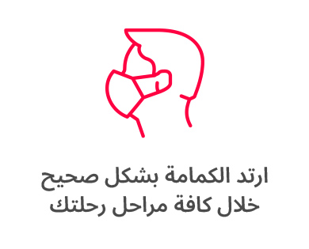

| # | اسم المستشفي | موقعها بالجيزة | التخصص | إذهب إلي المستشفي! |
|---|---|---|---|---|
| 1 | مركز مصر للقلب | الدقي | القلب | |
| 2 | مستشفي الموظفين | العجوزة | عامة | |
| 3 | مستشفي حميات امبابه | امبابه | باطني | |
| 4 | مستشفي الصدر | العمرانية | الصدر | |
| 5 | مستشفي الرمد | الجيزة | الرمد |
يقصد بالنظام الصحي :الرعاية الصحية التي يحصل عليها المواطنين وتناول الحالة الصحية بالدراسة للمواطنين من خلال مجموعة من العناصر؛ مثل التشخيص ،والعلاج والوقاية من خلال وحدات النظام الصحي الممثلة في المستشفيات أوغيرها ،وهي من أهم الخدمات التي تقدمها الدولة للشعب لتعلقها بحياة الانسان في مراحل عمره المختلفة وتوفير الخدمة الصحية أساسي للمواطنين. تهتم الدراسة الجغرافيةلا سيما الجغرافية التطبيقية في هذا المجال بالتوزيع الجغرافي للخدمات الصحية الحكومية بشكل عام بالإضافة إلى القطاع الخاص ،وهل هذا التوزيع مناسب مع التطورالعمراني الذي يحدث كل يوم ومعرفة المستوى الصحي الذي يتمتع به السكان ،و تحديد افضل مصار للوصول إليها ،وهل الخدمات الصحية الموجود في المنطقة تغطي احتياجات المواطنين في ظل منهج ادارة الازمة ،والتقنيات الحديثة لنظم المعلومات الجغرافية (GIS) ،والأستشعار عن بعض (RS). ويتمثل الهدف الرئيسي في هذه الدراسة في تحليل واقع التوزيع المكاني الحالي للخدمات الصحية ،ومدى كفاءتها ،وملاءمتها لاحتياجات السكان في مدينة الجيزة ،بالإضافة إلى مواقع الوحدات الصحية الممثلة في الدراسة في المستشفيات وسهولة الوصل إليها الوصول إلى توزيع مكاني أفضل ليناسب التطور العمراني ،وتطبيق عملي يسهل الوصول على هذه الخدمات.
تناقش الدراسة رصد التوزيع الخدمات الصحية المقدمة للسكان في مدينة الجيزة والتركيز على التوزيع المكان لهذه الخدمات من حيث مناسبتها لحجم السكان والتطور العمراني و تتمثل أهداف الدراسة في :